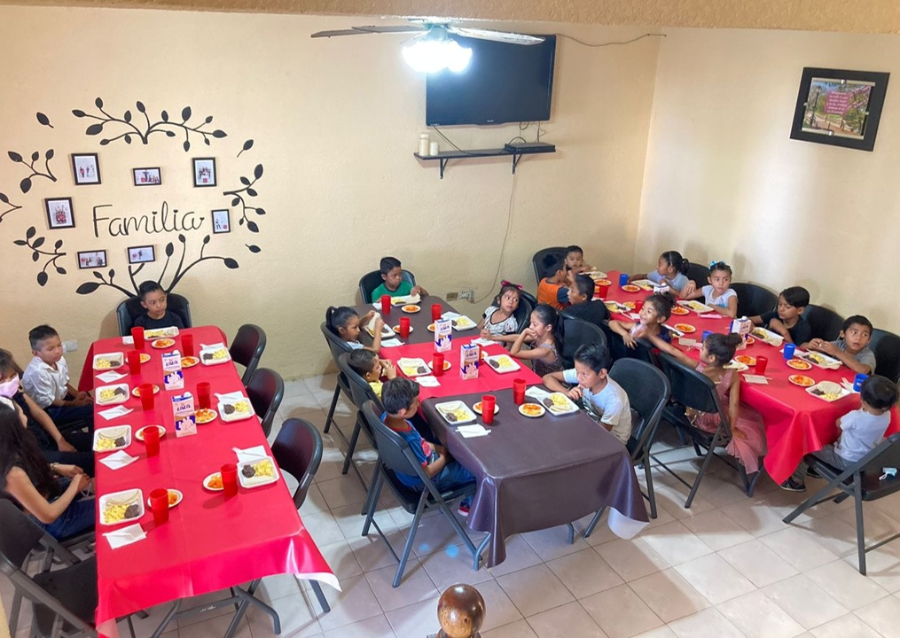
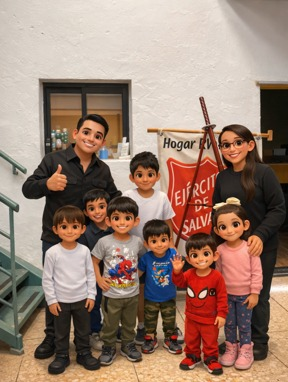

Con más de una década de labor social, entregamos soluciones integrales que empoderan a la niñez para crecer. Entendiendo sus desafíos únicos, brindamos apoyo estratégico.
Enfocados en necesidades únicas, entregamos programas que mezclan conocimiento y estrategias de vanguardia.
Garantizamos un crecimiento saludable mediante el acceso a servicios médicos y alimentación balanceada.
Brindamos asesoría y acompañamiento para asegurar un entorno seguro para cada niño.

EducaciónApoyamos a comunidades rurales para alinear el talento infantil con iniciativas de educación global.
Ayudamos a familias que luchaban con la escasez, logrando mejorar la salud de cientos de niños.
"Trajeron esperanza a problemas complejos. Me impresionó lo rápido que sus programas se convirtieron en resultados tangibles para nuestra comunidad."